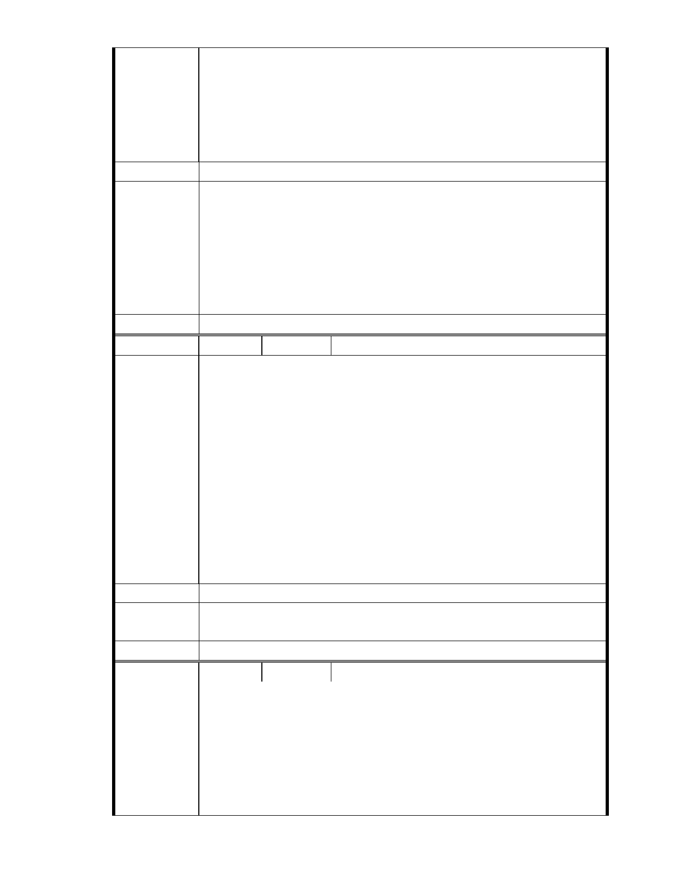

開發的背書者。」陳宏宇這段發言，則更明白揭示了此案地質敏感程度，
讓審查委員不願盲目背書。
建議辦法
沒有人知道未來的風雨會多嚴重，沒有人能夠弭平天災造成的遺憾，救
災是一種公德，但若不顧「造災」的疑慮，等事後再來救災，那就不是
慈悲了。
一、本案申請範圍於慈濟購得前已遭非法填土，實不具保護區之功能，
今申請單位欲興辦社會福利事業，故依法辦理都市計畫變程序；目
市府說明
前申請方案較先前方案已大幅降低開發強度、調整使用項目並承諾
大面積滯洪設施等回饋事項，顯示申請單位欲改善現況之誠意。
二、相關陳情意見將納入本案審查人民意見，依法定程序辦理。
三、後續審理程序將要求申請人加強與在地區民、社會大眾，就基地現
況、規劃方案及環境助益作為等方面加強溝通。
委 員 會 決 議 同編號 1。
編號
陳情理由
34 陳情人 市長信箱（ MA201011250013 ）
市長您好:
我是居住在台北市內湖區的小市民.有幾個問題想請教您.
1.柵湖線捷運當初為何不直接經大直及忠烈祠接劍潭站.或是松山接圓
山.這樣就不用換捷運系統.且到哪都方便.如果在松山接圓山站.去淡
水.去台北車站.去動物園.這樣的動線是不是更好呢?
2.慈濟在內湖保護區申請土地變更開發之事.可以舉辦公辦公聽會嗎?要
不是看報紙還不知有這檔事.那個團體在保護區申請土地變更.好像違背
那位"上人"反對蘇花高時強調的~維護大自然~論點.請讓內湖人來決定
這件事好嗎?不要像內湖線被葉菊蘭獨裁拍板定案.
在幾天就選舉.您一定很忙.這封信您可能沒時間看.如有看到請來內湖
走走.祝您 高票當選.
建議辦法
市 府 說 明 後續審理程序將要求申請人加強與在地區民、社會大眾，就基地現況、
規劃方案及環境助益作為等方面加強溝通。
委 員 會 決 議 同編號 1。
編
號 35
陳情人 市長信箱（ MA201011250045 ）
附件如附.（同編號 33 市長信箱 MA201011230110）
陳情理由
楊裕熹
慈濟是一個非常有錢的團體.一直給人的印象是從事慈善工作.現在卻要
藉由其影響力想要享受特權.請問郝市長你是支持特權團體還是弱勢的
台北市民?
- 39 -